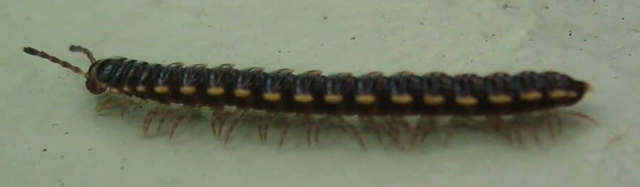

चपटा गोजरFlat-backed Millipede
Asiomorpha coarctata · Paradoxosomatidae · MYR-0003

- Scientific name
- Asiomorpha coarctata (De Saussure, 1860)
- Family
- Paradoxosomatidae
- Hindi
- चपटा गोजर
- Status here
- naturalized
- IUCN
- not evaluated
When to look कब देखें
Expected mainly in June, July, August, September, October, November.
चपटा गोजर / Flat-backed Millipede
Asiomorpha coarctata (De Saussure, 1860) — Paradoxosomatidae
चपटा गोजर — बगीचों, गमलों के नीचे और नम मिट्टी में पाया जाने वाला एक छोटा, चपटा सहस्रपाद (millipede) है। इसके शरीर का रंग गहरा भूरा या काला होता है और इसके किनारों पर पीले या क्रीम रंग के उभार (lateral flanges) होते हैं। यह मूल रूप से दक्षिण-पूर्वी एशिया का जीव है लेकिन अब उत्तर प्रदेश के ग्रामीण और शहरी बगीचों में प्राकृतिक रूप से स्थापित (naturalized) हो चुका है। यह सड़ती हुई पत्तियों और जैविक पदार्थों को खाकर उन्हें उपजाऊ मिट्टी में बदलता है। जब इसे छेड़ा जाता है, तो यह खुद को एक सर्पिल (spiral) में समेट लेता है और एक तीखी गंध छोड़ता है जो चींटियों को दूर रखती है, लेकिन यह इंसानों के लिए पूरी तरह से हानिरहित है।
Quick Identification त्वरित पहचान
| Feature | Description |
|---|---|
| Body Shape | Dorsoventrally flattened body with prominent lateral yellow-cream flanges (paranota) on each segment |
| Colour | Dark brown to blackish-brown body colour with contrasting bright yellow or cream-coloured edges |
| Legs | Pale cream-yellow legs; adults have two pairs of legs per body segment (except the first few) |
| Size | 15.0–20.0 mm in length; approximately 1.5–2.0 mm wide |
| Legs per segment | Two pairs per segment (millipede trait) |
| Movement | Slow, steady, rhythmic forward gliding; does not run erratically |
| Defence | Coils into a flat spiral when disturbed; releases an almond-like odour (hydrogen cyanide) |
Field tip: Look under wet flowerpots, damp bricks, or in decaying leaf litter during the monsoon. The combination of a dark brown flattened body with bright yellow edges and slow movement immediately identifies this species.
Millipede vs. Centipede Distinction
Farmers and citizen scientists often confuse this harmless millipede with venomous centipedes. Use these rules to differentiate them:
- Legs per segment: Millipedes (like the Flat-backed Millipede) have two pairs of legs per body segment. Centipedes (like the Indian Centipede
[MYR-0001]) have only one pair of legs per body segment. - Movement: Millipedes move slowly and smoothly in a straight line. Centipedes are fast, aggressive, and run erratically.
- Diet: Millipedes are detritivores (eating dead leaves and organic compost). Centipedes are predators that hunt live insects using venom claws.
- Venom & Harm: Millipedes do not bite or sting and are completely harmless to humans. Centipedes have venomous claws (forcipules) and can deliver a painful bite.
Morphology आकारिकी
| Measurement | Range |
|---|---|
| Body length | 15.0–20.0 mm |
| Approximate segment count | 20 |
Dorsal paranota: The dorsal surface of the body segments has prominent lateral projections (paranota or flanges). These flanges give the millipede its flat-backed appearance. The paranota are bright yellow or cream, contrasting sharply with the dark chocolate-brown or blackish mid-dorsal surface.
Body segments: Adult specimens possess exactly 20 body segments, which is a diagnostic feature of the order Polydesmida. The segments are smooth, and the legs are attached to the ventral side.
Head: The head is rounded and lacks eyes (ocelli are completely absent in this order). It features a pair of short, club-like antennae that are used to navigate the soil and leaf litter.
Legs: The legs are relatively long, pale yellow, and project slightly from the sides of the body when viewed from above.
Behaviour & Ecology व्यवहार और पारिस्थितिकी
Damp soil dweller and detritivore.
- Nocturnal activity: The species is highly sensitive to desiccation and remains hidden under stones, decaying wood, or leaf litter during the dry daylight hours. It emerges at night or during overcast rainy days to feed on the surface.
- Defence glands: Possesses defensive scent glands (ozopores) along the sides of the body segments. When threatened or handled, it secretes a tiny amount of hydrogen cyanide (HCN) and benzaldehyde, giving off a distinct bitter-almond odour. This chemical defense deter predatory ants and beetles.
- Coiling behavior: Unlike cylindrical millipedes that coil into a three-dimensional spiral, the Flat-backed Millipede coils into a flat, two-dimensional spiral, tucking its head into the center.
Life Cycle / Phenology जीवन चक्र
- Breeding season: Mating occurs during the monsoon season (July–September) when soil moisture is high. The male transfers a spermatophore to the female using specialized legs (gonopods) on the seventh segment.
- Egg laying: The female constructs a nest cavity in damp soil using digested soil and fecal pellets. She lays a cluster of 50–150 small, white eggs.
- Development: The eggs hatch within a week into legless larvae. They undergo 7 developmental stages (stadia), adding body segments and legs with each moult. Adults mature in 3–5 months and live for 1–2 years.
Host Plants or Prey आहार
Detritivorous diet:
- Decomposing organic matter: Primary diet consists of decaying plant matter, fallen leaves (especially mango and guava leaves in local gardens), compost, and decaying wood.
- Fungal hyphae: Also feeds on soil fungi, algae, and bacterial biofilms growing on damp wood or stone surfaces.
Predators / Natural Enemies शत्रु
- Arthropod predators: Preyed upon by larger predatory beetles, ground spiders, and centipedes (such as the Indian Centipede
[MYR-0001]). - Vertebrate predators: Occasionally eaten by common garden toads (
[AMP-0001 Common Toad]) and ground-feeding birds (such as[BRD-0035 Jungle Babbler]), which are tolerant of their defensive chemical secretions.
Agricultural / Human Relevance कृषि प्रासंगिकता
Decomposer and soil health promoter.
- Compost helper: Extremely beneficial in home gardens and compost heaps, where they shred organic waste, accelerating the production of humus.
- Non-pest status: Does not damage living agricultural crops. Unlike some centipedes, it cannot bite humans and is entirely safe to handle.
- Soil health indicator: A healthy population of flat-backed millipedes in kitchen gardens indicates rich soil organic matter and clean, pesticide-free management.
Expected Locally स्थानीय रूप से अपेक्षित
Not a field record. Written from published accounts for eastern Uttar Pradesh. No confirmed local sighting yet — if you have seen it, that is what the atlas needs.
अभी तक स्थानीय पुष्टि नहीं। यह विवरण प्रकाशित स्रोतों से है, किसी अवलोकन से नहीं।
Commonly found under clay flowerpots and damp brick walls in urban gardens of Basti town and rural household backyards during the monsoon months (July–September). They frequently congregate in compost pits and damp mulch beds.
Distribution वितरण
Global range: Native to Southeast Asia (including Myanmar, Thailand, and Vietnam). It has been introduced globally via the soil of ornamental plants and is now widely naturalized across tropical and subtropical regions, including South Asia, East Africa, and South America.
In India: Widespread across all warm, humid plains, particularly in human-dominated garden habitats.
In Uttar Pradesh: Common in both urban gardens and rural homestead plantations.
In Basti district / eastern UP: Abundant in home gardens, nurseries, and damp shaded compost heaps.
Research Questions शोध प्रश्न
- How does the presence of Asiomorpha coarctata in compost heaps affect the decomposition rate of mango leaves compared to earthworms alone? / बगीचे के कचरे के अपघटन में चपटे गोजर और केंचुए की संयुक्त भूमिका का क्या प्रभाव पड़ता है?
- What is the primary factor limiting the survival of this tropical species during the hot and dry summer months (April–May) in Basti? / बस्ती में गर्मी के शुष्क महीनों (अप्रैल-मई) में इस प्रजाति की उत्तरजीविता को सीमित करने वाला मुख्य कारक क्या है?
- Does the chemical defense secretion of Asiomorpha coarctata effectively repel local invasive fire ants (
[INS-0039 Tropical Fire Ant])? - Is this species present in native forest patches in eastern UP, or is it strictly restricted to human-modified garden habitats?
- How many segments do juvenile Flat-backed Millipedes have at hatching, and at what rate do they add new segments during their developmental moults?
Similar Species मिलती-जुलती प्रजातियाँ
| Species | Key Difference | हिंदी |
|---|---|---|
Trigoniulus corallinus (Rusty Millipede [MYR-0002]) | Cylindrical body shape; bright red-orange colouration; coils into a three-dimensional spiral; has 40–55 body segments. | लाल सहस्रपाद — गोल शरीर, चमकीला लाल रंग |
Scolopendra morsitans (Indian Centipede [MYR-0001]) | Flat body, but carries only one pair of legs per segment; fast-moving predator; possesses venomous claws. | गोजर — एक खंड पर एक जोड़ी पैर, विषैला दंश |
| Oxidus gracilis (Greenhouse Millipede) | Slightly smaller (15 mm); pale brown lateral flanges instead of bright yellow; distinct granular dorsal surface. | छोटा गोजर — हल्का भूरा रंग, खुरदरी पीठ |
Taxonomy & Classification वर्गीकरण
Original description. Paul de Saussure described the species as Polydesmus coarctatus in 1860 in Mémoires de la Société de Physique et d'Histoire Naturelle de Genève (Vol. 15, p. 297). The type locality was the East Indies. The genus name Asiomorpha refers to its Asian origin, and the specific epithet coarctata comes from the Latin for "restricted" or "contracted," referring to the constricted neck-like appearance between body segments.
Subspecies. Monotypic — no subspecies are currently recognised.
Family and order placement. Placed in the order Polydesmida, suborder Polydesmidea, family Paradoxosomatidae.
Phylogenetic notes. Paradoxosomatidae is one of the largest families of flat-backed millipedes, comprising over 1,000 species. Asiomorpha coarctata is closely related to the genus Orthomorpha but is distinguished by the specific shape of the male gonopods.
IUCN status rationale. The species is not listed on the IUCN Red List of Threatened Species and is considered not evaluated. Because of its wide global distribution, high abundance in synanthropic habitats, and adaptability, it is not of conservation concern.
Photo Gallery फोटो गैलरी
References संदर्भ
- Saussure, H. de (1860). Essai d'une faune des myriapodes du Mexique, avec la description de quelques espèces de l'autre continent. Mémoires de la Société de Physique et d'Histoire Naturelle de Genève, 15: 259–393. [original description]
- Attems, C. (1937). Das Tierreich. Lfg. 68. Polydesmida I. Fam. Strongylosomidae. Walter de Gruyter & Co., Berlin.
- Jeekel, C.A.W. (1968). On the classification and geographical distribution of the family Paradoxosomatidae (Diplopoda, Polydesmida). Privately published, Amsterdam.
- Zoological Survey of India. State Fauna Series: Fauna of Uttar Pradesh — Myriapoda. ZSI, Kolkata.
- GBIF Occurrence Data — Asiomorpha coarctata (2026). GBIF taxon key: 1016836.
- Shelley, R. M. & Lehtinen, P. T. (1998). Introductions of the Asiatic milliped Asiomorpha coarctata (De Saussure) to the Hawaiian Islands and Florida, and a correction in its authority. Entomological News, 109(5), 351-354.
Source file: species/fauna/myriapods/flat_backed_millipede.md